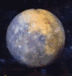
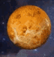
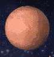

| Mercury | Venus | Earth | Mars | |
|---|---|---|---|---|
| Images |  |  |  | |
| Mass (1024 kg) | 0.330 | 4.87 | 5.97 | 0.642 |
| Diameter (km) | 4879 | 12,104 | 12,756 | 6792 |
| Density (kg/m3) | 5429 | 5243 | 5514 | 3934 |
| Length of Day (hours) | 4222.6 | 2802.0 | 24.0 | 24.7 |
| Distance from Sun (106 km) | 57.9 | 108.2 | 149.6 | 228.0 |
| Orbital Period (days) | 88.0 | 224.7 | 365.2 | 687.0 |
| Orbital Velocity (km/s) | 47.4 | 35.0 | 29.8 | 24.1 |